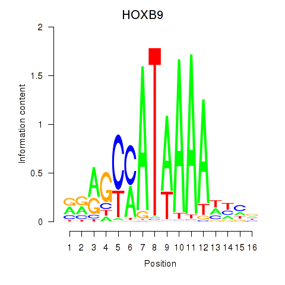
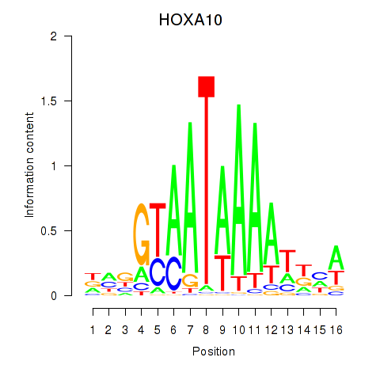

Motif ID: HOXA10_HOXB9
Z-value: 0.533


Transcription factors associated with HOXA10_HOXB9:
| Gene Symbol | Entrez ID | Gene Name |
|---|---|---|
| HOXA10 | ENSG00000253293.3 | HOXA10 |
| HOXB9 | ENSG00000170689.8 | HOXB9 |
![](http://string-db.org/api/image/network?network_flavor=evidence&limit=0&species=9606&caller_identity=MARA&identifiers=9606.ENSP00000341045%0D9606.ENSP00000342805%0D9606.ENSP00000265500%0D9606.ENSP00000357040%0D9606.ENSP00000255499%0D9606.ENSP00000284437%0D9606.ENSP00000368140%0D9606.ENSP00000321737%0D9606.ENSP00000369943%0D9606.ENSP00000471423%0D9606.ENSP00000377747%0D9606.ENSP00000450337%0D9606.ENSP00000366677%0D9606.ENSP00000265986%0D9606.ENSP00000355435%0D9606.ENSP00000215941%0D9606.ENSP00000346389%0D9606.ENSP00000332931%0D9606.ENSP00000251776%0D9606.ENSP00000362485%0D9606.ENSP00000366336%0D9606.ENSP00000194130%0D9606.ENSP00000306461%0D9606.ENSP00000375767%0D9606.ENSP00000348915%0D9606.ENSP00000295113%0D9606.ENSP00000373575%0D9606.ENSP00000308219%0D9606.ENSP00000382511%0D9606.ENSP00000436900%0D9606.ENSP00000353295%0D9606.ENSP00000260682%0D9606.ENSP00000365048%0D9606.ENSP00000337513%0D9606.ENSP00000324549%0D9606.ENSP00000027335%0D9606.ENSP00000264568%0D9606.ENSP00000346442%0D9606.ENSP00000346440%0D9606.ENSP00000341013%0D9606.ENSP00000184183%0D9606.ENSP00000273077%0D9606.ENSP00000239347%0D9606.ENSP00000441954%0D9606.ENSP00000287461%0D9606.ENSP00000293373%0D9606.ENSP00000230588%0D9606.ENSP00000302552%0D9606.ENSP00000307705%0D9606.ENSP00000377547%0D9606.ENSP00000352173%0D9606.ENSP00000329165%0D9606.ENSP00000245479%0D9606.ENSP00000290295%0D9606.ENSP00000383042%0D9606.ENSP00000264908%0D9606.ENSP00000340874%0D9606.ENSP00000363913%0D9606.ENSP00000330442%0D9606.ENSP00000366612%0D9606.ENSP00000284049%0D9606.ENSP00000449597%0D9606.ENSP00000260229%0D9606.ENSP00000246117%0D9606.ENSP00000470698%0D9606.ENSP00000401437%0D9606.ENSP00000301072%0D9606.ENSP00000301071%0D9606.ENSP00000376443%0D9606.ENSP00000353769%0D9606.ENSP00000326042%0D9606.ENSP00000245838%0D9606.ENSP00000267853%0D9606.ENSP00000332973%0D9606.ENSP00000343212%0D9606.ENSP00000369695%0D9606.ENSP00000264344%0D9606.ENSP00000355517%0D9606.ENSP00000439856%0D9606.ENSP00000367631%0D9606.ENSP00000336799%0D9606.ENSP00000382485%0D9606.ENSP00000383303%0D9606.ENSP00000278198%0D9606.ENSP00000229002%0D9606.ENSP00000206423%0D9606.ENSP00000444972%0D9606.ENSP00000354687%0D9606.ENSP00000375220%0D9606.ENSP00000318197%0D9606.ENSP00000387699%0D9606.ENSP00000251566%0D9606.ENSP00000470415%0D9606.ENSP00000361577%0D9606.ENSP00000350050%0D9606.ENSP00000266086%0D9606.ENSP00000371542%0D9606.ENSP00000342033%0D9606.ENSP00000239461%0D9606.ENSP00000275815%0D9606.ENSP00000335567)
{kind=link}
{kind=link}
{kind=link}
{kind=link}
Top targets:
Gene overrepresentation in biological_process category:
| Log-likelihood per target | Total log-likelihood | Term | Description |
|---|---|---|---|
| 0.1 | 0.3 | GO:0070175 | positive regulation of enamel mineralization(GO:0070175) |
| 0.1 | 1.2 | GO:1904352 | positive regulation of protein catabolic process in the vacuole(GO:1904352) |
| 0.1 | 0.5 | GO:0061767 | negative regulation of lung blood pressure(GO:0061767) |
| 0.1 | 0.3 | GO:0090214 | spongiotrophoblast layer developmental growth(GO:0090214) |
| 0.0 | 0.2 | GO:0031296 | positive regulation of germinal center formation(GO:0002636) B cell costimulation(GO:0031296) |
| 0.0 | 0.1 | GO:0002314 | germinal center B cell differentiation(GO:0002314) |
| 0.0 | 0.1 | GO:1901143 | insulin catabolic process(GO:1901143) |
| 0.0 | 0.2 | GO:0046098 | guanine metabolic process(GO:0046098) |
| 0.0 | 0.1 | GO:0060743 | epithelial cell maturation involved in prostate gland development(GO:0060743) |
| 0.0 | 0.2 | GO:0001550 | ovarian cumulus expansion(GO:0001550) fused antrum stage(GO:0048165) |
| 0.0 | 0.1 | GO:0035574 | histone H4-K20 demethylation(GO:0035574) |
| 0.0 | 0.1 | GO:0060490 | orthogonal dichotomous subdivision of terminal units involved in lung branching morphogenesis(GO:0060488) planar dichotomous subdivision of terminal units involved in lung branching morphogenesis(GO:0060489) lateral sprouting involved in lung morphogenesis(GO:0060490) |
| 0.0 | 0.2 | GO:0034670 | transforming growth factor beta3 production(GO:0032907) regulation of transforming growth factor beta3 production(GO:0032910) positive regulation of transforming growth factor beta3 production(GO:0032916) chemotaxis to arachidonic acid(GO:0034670) response to arachidonic acid(GO:1904550) |
| 0.0 | 0.1 | GO:0001880 | Mullerian duct regression(GO:0001880) |
| 0.0 | 0.1 | GO:0007499 | ectoderm and mesoderm interaction(GO:0007499) |
| 0.0 | 0.1 | GO:0043376 | regulation of CD8-positive, alpha-beta T cell differentiation(GO:0043376) |
| 0.0 | 0.1 | GO:0052314 | phytoalexin metabolic process(GO:0052314) |
| 0.0 | 0.1 | GO:0001983 | regulation of systemic arterial blood pressure by carotid sinus baroreceptor feedback(GO:0001978) baroreceptor response to increased systemic arterial blood pressure(GO:0001983) positive regulation of the force of heart contraction by chemical signal(GO:0003099) |
| 0.0 | 0.4 | GO:2000096 | positive regulation of Wnt signaling pathway, planar cell polarity pathway(GO:2000096) |
| 0.0 | 0.0 | GO:0050720 | interleukin-1 beta biosynthetic process(GO:0050720) |
| 0.0 | 0.1 | GO:0003172 | primary heart field specification(GO:0003138) sinoatrial valve development(GO:0003172) sinoatrial valve morphogenesis(GO:0003185) |
| 0.0 | 0.1 | GO:0008616 | queuosine biosynthetic process(GO:0008616) queuosine metabolic process(GO:0046116) |
| 0.0 | 0.1 | GO:0019805 | quinolinate biosynthetic process(GO:0019805) |
| 0.0 | 0.3 | GO:0052695 | cellular glucuronidation(GO:0052695) |
| 0.0 | 0.1 | GO:0070537 | histone H2A K63-linked deubiquitination(GO:0070537) |
| 0.0 | 0.0 | GO:0051097 | negative regulation of helicase activity(GO:0051097) |
| 0.0 | 0.0 | GO:1990637 | response to prolactin(GO:1990637) regulation of ovarian follicle development(GO:2000354) |
| 0.0 | 0.0 | GO:0010652 | regulation of cell communication by chemical coupling(GO:0010645) positive regulation of cell communication by chemical coupling(GO:0010652) |
| 0.0 | 0.0 | GO:1903570 | regulation of protein kinase D signaling(GO:1903570) positive regulation of protein kinase D signaling(GO:1903572) |
| 0.0 | 0.1 | GO:0016098 | monoterpenoid metabolic process(GO:0016098) |
Gene overrepresentation in cellular_component category:
| Log-likelihood per target | Total log-likelihood | Term | Description |
|---|---|---|---|
| 0.0 | 0.5 | GO:0071144 | SMAD2-SMAD3 protein complex(GO:0071144) |
| 0.0 | 0.3 | GO:0042406 | extrinsic component of endoplasmic reticulum membrane(GO:0042406) |
| 0.0 | 0.2 | GO:1990589 | ATF4-CREB1 transcription factor complex(GO:1990589) |
| 0.0 | 0.1 | GO:0033150 | cytoskeletal calyx(GO:0033150) |
| 0.0 | 0.1 | GO:0060187 | cell pole(GO:0060187) |
| 0.0 | 0.1 | GO:0097679 | other organism cytoplasm(GO:0097679) |
| 0.0 | 0.1 | GO:0031251 | PAN complex(GO:0031251) |
| 0.0 | 0.1 | GO:1990876 | cytoplasmic side of nuclear pore(GO:1990876) |
| 0.0 | 0.2 | GO:1990712 | HFE-transferrin receptor complex(GO:1990712) |
Gene overrepresentation in molecular_function category:
| Log-likelihood per target | Total log-likelihood | Term | Description |
|---|---|---|---|
| 0.1 | 0.5 | GO:0031962 | mineralocorticoid receptor binding(GO:0031962) |
| 0.1 | 0.2 | GO:0061752 | telomeric repeat-containing RNA binding(GO:0061752) |
| 0.0 | 0.1 | GO:0005427 | proton-dependent oligopeptide secondary active transmembrane transporter activity(GO:0005427) secondary active oligopeptide transmembrane transporter activity(GO:0015322) |
| 0.0 | 0.1 | GO:0031626 | beta-endorphin binding(GO:0031626) |
| 0.0 | 0.1 | GO:0008808 | cardiolipin synthase activity(GO:0008808) phosphatidyltransferase activity(GO:0030572) CDP-diacylglycerol-phosphatidylglycerol phosphatidyltransferase activity(GO:0043337) |
| 0.0 | 0.1 | GO:0035575 | histone demethylase activity (H4-K20 specific)(GO:0035575) |
| 0.0 | 0.1 | GO:0032089 | NACHT domain binding(GO:0032089) |
| 0.0 | 0.2 | GO:1990763 | arrestin family protein binding(GO:1990763) |
| 0.0 | 0.1 | GO:0097003 | adipokinetic hormone receptor activity(GO:0097003) |
| 0.0 | 0.1 | GO:0004937 | alpha1-adrenergic receptor activity(GO:0004937) |
| 0.0 | 0.1 | GO:0050253 | retinyl-palmitate esterase activity(GO:0050253) |
| 0.0 | 0.0 | GO:0003863 | alpha-ketoacid dehydrogenase activity(GO:0003826) 3-methyl-2-oxobutanoate dehydrogenase (2-methylpropanoyl-transferring) activity(GO:0003863) |
| 0.0 | 0.2 | GO:0005025 | transforming growth factor beta receptor activity, type I(GO:0005025) |
| 0.0 | 0.1 | GO:0099580 | ion antiporter activity involved in regulation of postsynaptic membrane potential(GO:0099580) |
| 0.0 | 0.1 | GO:0034875 | oxidoreductase activity, acting on CH or CH2 groups, quinone or similar compound as acceptor(GO:0033695) caffeine oxidase activity(GO:0034875) |
| 0.0 | 0.2 | GO:0019834 | phospholipase A2 inhibitor activity(GO:0019834) |
| 0.0 | 0.1 | GO:0005412 | glucose:sodium symporter activity(GO:0005412) |
| 0.0 | 0.0 | GO:0001181 | transcription factor activity, core RNA polymerase I binding(GO:0001181) |
| 0.0 | 0.1 | GO:0008479 | queuine tRNA-ribosyltransferase activity(GO:0008479) |
| 0.0 | 0.1 | GO:0030618 | transforming growth factor beta receptor, pathway-specific cytoplasmic mediator activity(GO:0030618) |
| 0.0 | 0.1 | GO:0005005 | transmembrane-ephrin receptor activity(GO:0005005) |
Gene overrepresentation in C2:CP category:
| Log-likelihood per target | Total log-likelihood | Term | Description |
|---|---|---|---|
| 0.0 | 0.6 | PID_SMAD2_3PATHWAY | Regulation of cytoplasmic and nuclear SMAD2/3 signaling |
| 0.0 | 1.2 | PID_NFAT_TFPATHWAY | Calcineurin-regulated NFAT-dependent transcription in lymphocytes |
Gene overrepresentation in C2:CP:REACTOME category:
| Log-likelihood per target | Total log-likelihood | Term | Description |
|---|---|---|---|
| 0.0 | 0.5 | REACTOME_SIGNALING_BY_NODAL | Genes involved in Signaling by NODAL |
| 0.0 | 0.2 | REACTOME_RECYCLING_OF_BILE_ACIDS_AND_SALTS | Genes involved in Recycling of bile acids and salts |
|
|
|
|